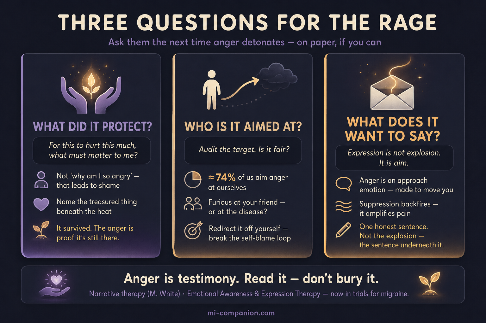

By Rustam Iuldashov
30 years lived experience with chronic migraine | Sources: 17 peer-reviewed references including a Scandinavian Journal of Pain meta-analysis (n=2,682), a fibromyalgia RCT in Pain (2017), and the narrative-therapy framework of Michael White & David Epston | Last updated: July 4, 2026
Medical Review: This content is based on peer-reviewed research from The Journal of Headache and Pain, Pain, Health Psychology, Annals of Behavioral Medicine, Psychotherapy and Psychosomatics, Scandinavian Journal of Pain, and Journal of Psychosomatic Research. Rustam Iuldashov is not a medical professional. Always consult a qualified healthcare provider for health-related decisions.
📋 Key Takeaways
- Migraine brains tend to hold anger inward. People with migraine score higher on “anger-in” and hypercontrol than people without headache — independent of anxiety and depression. [1][2][3][5]
- The anger–pain link is real at scale. A meta-analysis of 2,682 chronic-pain patients found more anger tracks with more pain and disability. [4]
- Suppressing anger amplifies pain. Experiments show that pushing anger down increases the pain you feel next, through an “ironic process” that makes the anger more accessible, not less. [6][7][8]
- The most common target is yourself — the most harmful kind. About 74% of chronic-pain patients aim anger at themselves, and self-directed anger is bound most tightly to pain and depression. [9]
- Anger is testimony. It fires when something you value is violated; behind the rage sits a cherished thing — the “absent but implicit.” [10][11]
- This is a direction with evidence, not just comfort. Emotion-focused therapies like EAET reduce chronic pain in randomized trials and are now being tested for migraine. [16][17]
The Feeling You’re Not Supposed to Admit
Your partner flicks on the kitchen light, and something in you detonates. Not irritation. Rage — disproportionate, ugly, instant.
You scroll past a friend’s photo from Bali and feel a flash of something close to hatred. The gym selfie. The hike. Just ran 10k, feeling amazing! You want to throw the phone across the room.
Then the second wave hits: shame. What kind of person hates a friend for being healthy? What kind of partner explodes at a light switch?
Here is what almost no one tells you. The anger is not a flaw in your character. It is information. And the shame you heap on top of it may cut deeper than the anger ever could.
I have lived with migraine for thirty years. For most of them, I treated my own rage as something to hide. I had it backwards.
You’d never lean over a friend mid-migraine and hiss that they’re pathetic. Yet the fury you turn on yourself runs on the same current — and it is trying to tell you something.
Migraine Brains Hold Anger Differently
The research is remarkably consistent, and it points one way.
People with migraine score higher on “anger-in” — feeling anger intensely but holding it inward instead of letting it out — than people without headache. [1][2] A study of 105 migraine patients in Turin found “difficult anger management with a tendency to hypercontrol.” [3] A 2022 meta-analysis pooling 2,682 chronic-pain patients confirmed the link: the more anger, the more pain and disability. [4]
And this is not just anxiety or depression wearing an angry mask. In a study that controlled for both, people with headache still held their anger in more than controls did. [5][2] The suppression stood on its own.
One caution, because it matters. These are snapshots — cross-sectional studies. They cannot prove suppressed anger causes migraine, and I am not claiming it does. Migraine is a neurological disease with genetic and physiological roots, not a moral failing. But the pattern is real, measurable, and consequential — because how you handle anger appears to shape how much pain you feel.
The Trap: Why Swallowing It Cuts Deeper
Common sense says: anger is unpleasant and costly, so push it down. Stay calm. Don’t make things worse.
The science says common sense is wrong.
Researchers provoked chronic-pain patients with a harassing partner during a frustrating task, then delivered a painful stimulus. The patients told to suppress their anger reported more pain afterward than those who didn’t. [6][7] Psychologists John Burns and Phillip Quartana named the mechanism an “ironic process”: the effort to bury anger makes it more accessible, not less, so it seeps back out and stains your read of the next painful sensation with extra irritation. [8][6]
Suppressed anger does not vanish. It goes underground — and it amplifies your pain.
There is a second cost, and it is worse. When Akiko Okifuji and Dennis Turk mapped where chronic-pain patients aimed their anger, roughly 70% reported angry feelings — and the most common target, at 74%, was themselves. [9] Anger turned inward was tied to both greater pain and deeper depression. [9]
This is the real trap. Swallowed rage does not disappear. It curdles into self-blame — and self-directed anger is the kind bound most tightly to suffering.
A Different Frame: Anger as Testimony
Here two worlds meet.
Affective scientists define anger precisely: it is the emotion that fires when a goal you care about is blocked by something you read as an obstacle or a wrong. [10] Anger is, at bottom, an appraisal of injustice — your nervous system flagging that something you value is under threat.
Now set that beside Michael White, the Australian social worker who co-founded narrative therapy. Following a thread from the philosopher Jacques Derrida, White saw that we feel pain only when a value we hold has been violated. [11] Behind every fierce negative emotion sits something we treasure. He called it the “absent but implicit” — the cherished thing you can see only by the shape of its absence, the love you can read only in the ache of its loss. [11][13]
Put the two together and something startling appears. Your rage is testimony. It is evidence, sworn by your own body, about what you love and what has been taken.
The fury at the Bali photo is not hatred of your friend. It is grief — for travel, for spontaneity, for a body you could once trust. The explosion at the kitchen light is not about the light. It is testimony to how much light hurts now, and how alone you are in a pain no one else in the room can see.
Read this way, anger stops being a symptom to silence. It becomes a message to decode.
Externalize It: The Rage Is Not You
White’s most famous move was deceptively simple: externalizing. [12][13] The person is not the problem. The problem is the problem.
In practice, you stop saying “I am an angry person” and start saying “Anger showed up today.” You name it. You set it outside yourself. Then you can study it — how it works, what it wants, when it visits, what it is trying to tell you. [12] This is not word-play. Externalizing dissolves the shame and defensiveness that keep you stuck, and it hands back a choice: your relationship to the thing, instead of fusion with it. [13][14]
The anger is not who you are. It is a visitor, carrying a letter. Your task is not to fight the messenger — it is to open the letter.
This is the whole idea behind meeting migraine as Mi — a companion, not an enemy. The rage that rides alongside it answers to the same move.

Three Questions That Turn Rage Into Self-Knowledge
Reframing alone is not enough. You need a practice. These three questions come straight from White’s method — his “double listening” and “absent but implicit” maps — retuned for the specific rage of chronic illness. [11][15] Ask them the next time anger detonates. On paper, if you can.
1 — What did this anger protect?
Not “why am I so angry” — that road leads back to shame. Ask instead: for this to hurt this much, what must matter to me? The rage at the gym photo guards your love of a capable body. The fury at the light guards your longing to cross a room without pain. Name the treasured thing. That thing is you at your most alive — and it survived. The anger is proof it is still there.
2 — Who is the anger really aimed at, and is that fair?
Remember Okifuji’s number: most of us aim it at ourselves. [9] So audit the target. Are you furious at your friend, or at a disease that stole something from you? At your partner, or at the brute fact that ordinary light is now a weapon? Turning anger away from yourself and the people you love — toward the illness, the injustice, the loss — breaks the self-blame loop that binds anger most tightly to pain.
3 — What does this anger want me to say?
Anger is an approach emotion. It evolved to move you toward action, not away from it. [10] Suppression backfires — the evidence is clear. [6][7] But expression is not explosion. It is aim. Trials of “anger awareness and expression training” for people with headaches found that learning to recognize and voice anger reduced emotional numbness, raised assertiveness, and eased headaches as much as gold-standard relaxation training. [15] So ask: what is the one honest sentence this anger needs me to say — to my partner, my doctor, my journal? Then say that. Not the explosion. The sentence underneath it.
This Is Treatment, Not Just Comfort
None of this is soft consolation. It is a live, evidence-based direction in pain medicine.
An entire class of therapy — Emotional Awareness and Expression Therapy, or EAET — rests on this premise: unprocessed emotion, especially anger knotted to conflict and hardship, keeps pain burning. In a randomized trial of 230 fibromyalgia patients, EAET beat patient education and, on several measures, outperformed cognitive behavioral therapy — today’s standard — including on cutting pain by more than half. [16] EAET is now in trials built specifically for migraine. [17]
The takeaway is not get angry and you’ll hurt less. It is quieter and more durable. Stop treating your anger as garbage to hide. Start treating it as testimony to read. And the self-blame that amplifies your pain begins to loosen its grip. [4][9]
⚠️ When Anger Needs More Than a Journal
If rage feels constant and uncontrollable, if it tips into thoughts of harming yourself or others, or if it arrives with a hopelessness that will not lift, this is not a failure — it is a signal to bring in a professional. A therapist trained in chronic-illness adjustment, EAET, or narrative therapy can help.
If you ever have thoughts of harming yourself, contact a crisis line or your local emergency services right away. Anger is testimony — you deserve a skilled witness to help you read it. Also seek prompt medical care for any sudden, severe “worst-ever” headache, or a headache with fever, confusion, weakness, vision loss, or trouble speaking — these can signal something other than migraine.
📋 Key Takeaways
- Migraine brains tend to hold anger inward. People with migraine score higher on “anger-in” and hypercontrol than people without headache — independent of anxiety and depression. [1][2][3][5]
- The anger–pain link is real at scale. A meta-analysis of 2,682 chronic-pain patients found more anger tracks with more pain and disability. [4]
- Suppressing anger amplifies pain. Experiments show that pushing anger down increases the pain you feel next, through an “ironic process” that makes the anger more accessible, not less. [6][7][8]
- The most common target is yourself — the most harmful kind. About 74% of chronic-pain patients aim anger at themselves, and self-directed anger is bound most tightly to pain and depression. [9]
- Anger is testimony. It fires when something you value is violated; behind the rage sits a cherished thing — the “absent but implicit.” Externalize it, then ask: what did it protect? Who is it aimed at? What does it want me to say? [10][11][12]
- This is a direction with evidence, not just comfort. Emotion-focused therapies like EAET reduce chronic pain in randomized trials and are now being tested for migraine. [16][17]
⚕️ Important Medical Disclaimer
This article is for informational and educational purposes only and does not constitute medical advice, diagnosis, or treatment. The author, Rustam Iuldashov, is not a licensed physician, neurologist, or psychotherapist. He is a patient advocate with 30 years of personal experience living with chronic migraine.
All clinical claims in this article are sourced from peer-reviewed research published in indexed medical journals. Study designs and sample sizes are noted in the references below. Migraine is a neurological disease; anger and emotional patterns are one piece of a much larger picture, and nothing here implies that migraine is psychological in origin or that emotional work alone can treat it.
Much of the anger–pain evidence is correlational, drawn from cross-sectional studies that cannot establish cause and effect; this limitation is stated plainly in the text. Emotion-focused approaches such as EAET are a promising, actively researched direction — not an established replacement for medical care. Some people, particularly those with a history of trauma or intense self-criticism, may find emotion-processing work difficult at first and benefit from doing it with a qualified therapist.
If you are experiencing a mental-health crisis or thoughts of self-harm, contact a crisis helpline in your country immediately. Always consult a qualified healthcare provider for questions about your individual health, migraine treatment, or medication decisions. This content was last reviewed for accuracy on July 4, 2026.
References
- Perozzo P, Savi L, Castelli L, Valfrè W, Lo Giudice R, Gentile S, Rainero I, Pinessi L. “Anger and emotional distress in patients with migraine and tension-type headache.” The Journal of Headache and Pain, 6:392–399 (2005). doi:10.1007/s10194-005-0240-8. Study design: Cross-sectional. n=201 headache patients + 45 controls.
- Giannini G, Rausa M, Cevoli S, Favoni V, Terlizzi R, Cortelli P, Pierangeli G. “Anger expression in chronic daily headache patients with and without psychiatric comorbidity.” The Journal of Headache and Pain, 16(S1):A109 (2015). doi:10.1186/1129-2377-16-S1-A109. Study design: Cross-sectional. n=85 chronic daily headache patients.
- Abbate-Daga G, Fassino S, Lo Giudice R, Rainero I, Gramaglia C, Marech L, Amianto F, Gentile S, Pinessi L. “Anger, depression and personality dimensions in patients with migraine without aura.” Psychotherapy and Psychosomatics, 76:122–128 (2007). doi:10.1159/000097971. Study design: Cross-sectional case-control. n=105 migraine + 79 controls.
- Koechlin H, Kossowsky J, Lam TL, Barthel J, Gaab J, Berde CB, Schwarzer G, Linde K, Meissner K, Locher C. “Associations between anger and chronic primary pain: a systematic review and meta-analysis.” Scandinavian Journal of Pain, 22(1):1–13 (2022). doi:10.1515/sjpain-2021-0154. Study design: Systematic review & meta-analysis. n=2,682 across 20 studies.
- Nicholson RA, Gramling SE, Ong JC, Buenaver L. “Differences in anger expression between individuals with and without headache after controlling for depression and anxiety.” Headache, 43:651–663 (2003). doi:10.1046/j.1526-4610.2003.03108.x. Study design: Cross-sectional. n=170.
- Burns JW, Quartana P, Gilliam W, Gray E, Matsuura J, Nappi C, Wolfe B, Lofland K. “Effects of anger suppression on pain severity and pain behaviors among chronic pain patients: evaluation of an ironic process model.” Health Psychology, 27(5):645–652 (2008). doi:10.1037/a0013044. Study design: Experimental. n=58 chronic low back pain patients.
- Quartana PJ, Burns JW. “Painful consequences of anger suppression.” Emotion, 7(2):400–414 (2007). doi:10.1037/1528-3542.7.2.400. Study design: Experimental (two studies). n=99.
- Quartana PJ, Yoon KL, Burns JW. “Anger suppression, ironic processes and pain.” Journal of Behavioral Medicine, 30(6):455–469 (2007). doi:10.1007/s10865-007-9127-2. Study design: Experimental (two studies).
- Okifuji A, Turk DC, Curran SL. “Anger in chronic pain: investigations of anger targets and intensity.” Journal of Psychosomatic Research, 47(1):1–12 (1999). doi:10.1016/S0022-3999(99)00006-9. Study design: Cross-sectional. n=96 chronic pain patients.
- Carver CS, Harmon-Jones E. “Anger is an approach-related affect: evidence and implications.” Psychological Bulletin, 135(2):183–204 (2009). doi:10.1037/a0013965. Study design: Theoretical review.
- White M. “Re-engaging with history: The absent but implicit.” In Reflections on Narrative Practice: Essays & Interviews, ch. 3, pp. 35–58. Adelaide: Dulwich Centre Publications, 2000. ISBN: 978-0-9577929-1-4. Clinical theory / narrative practice.
- White M, Epston D. Narrative Means to Therapeutic Ends. New York: W.W. Norton & Company, 1990. ISBN: 978-0-393-70098-8. Foundational clinical text (externalizing).
- Carey M, Walther S, Russell S. “The absent but implicit: A map to support therapeutic enquiry.” Family Process, 48(3):319–331 (2009). doi:10.1111/j.1545-5300.2009.01285.x. Study design: Clinical methodology.
- Lock A, Epston D, Maisel R. “Countering that which is called anorexia.” Narrative Inquiry, 14(2):275–301 (2004). doi:10.1075/ni.14.2.05loc. Study design: Clinical methodology (externalizing).
- Slavin-Spenny O, Lumley MA, Thakur ER, Nevedal DC, Hijazi AM. “Effects of Anger Awareness and Expression Training versus Relaxation Training on Headaches: A Randomized Trial.” Annals of Behavioral Medicine, 46(2):181–192 (2013). doi:10.1007/s12160-013-9500-z. Study design: RCT. n=147.
- Lumley MA, Schubiner H, Lockhart NA, Kidwell KM, Harte SE, Clauw DJ, Williams DA. “Emotional awareness and expression therapy, cognitive behavioral therapy, and education for fibromyalgia: a cluster-randomized controlled trial.” Pain, 158(12):2354–2363 (2017). doi:10.1097/j.pain.0000000000001036. Study design: Cluster-RCT. n=230.
- Lumley MA, et al. “Emotional Awareness and Expression Therapy (EAET) as a Novel Migraine Treatment.” ClinicalTrials.gov identifier NCT05837650 (ongoing). Study design: RCT (in progress).

How We Create Content
- Peer-reviewed sources only. This article draws from The Journal of Headache and Pain, Pain, Health Psychology, Emotion, Journal of Behavioral Medicine, Annals of Behavioral Medicine, Psychotherapy and Psychosomatics, Scandinavian Journal of Pain, Journal of Psychosomatic Research, Psychological Bulletin, and Family Process.
- Study transparency. Study design and sample sizes noted for all clinical references.
- Source verification. All claims backed by numbered references with DOI links.
- Experience + Science. 30 years personal migraine experience combined with peer-reviewed evidence and narrative therapy frameworks (Michael White, David Epston).
- Honest framing. Where the evidence is correlational rather than causal, or early rather than settled, the article says so rather than overstating it.
- No conflicts of interest. No funding from pharmaceutical companies, therapy-training organizations, or supplement manufacturers.
Read the Anger. Don’t Bury It.
Migraine Companion was built on narrative therapy — the belief that you are not your migraine, and not the rage that rides alongside it. Track your attacks, yes. But also give the harder feelings a place to be named, so the self-blame that amplifies your pain has somewhere to go.
Last reviewed: July 2026
Next scheduled review: January 2027